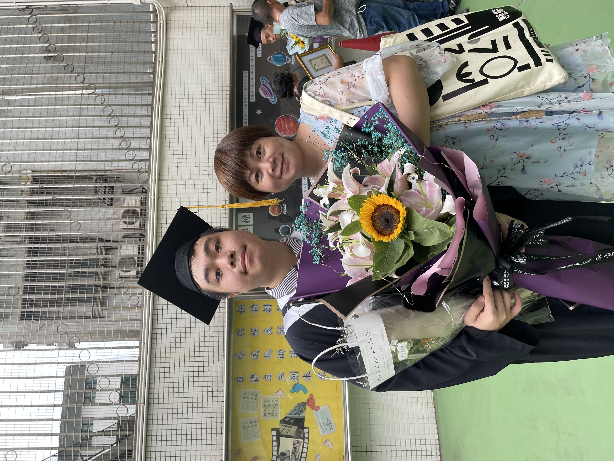

我爸爸是個維修主管，我不知道他的工作內容是甚麼了，但我只知道他在賭場工作，不是賺很多，但錢都自己用。從小我就被他罵挺多次的，所以從前我是一直很討厭他，他又不會給我零用錢，也不會誇我，只知道去釣魚，我從小的時候已經自己一個人在家，自己上下學了，因為學校就在家的後面而已。
我媽媽原本是做航空公司的，後來因為「沙士」就換了現在在賭場做荷官的工作，雖然會比之前的航空公司的工作時間不規律，所以導致我經常自己一個人在家裡。但我覺得我媽媽是全天下最好的了，因為我們家的所有費用基本都是她出的，甚麼電費呀保全費呀我的零用錢等等。全部都是她一個在出的，我爸就沒怎麼出，現在好一點，我爸也會願意幫助出，可能是我讀大學了才這樣。
我還有個比我小7歲的妹妹，她呢小時候搗蛋很調皮，到現在長大了，也很調皮，怎麼說也不聽，就聽不進去，她的成績也不會算太好，只是在合格線上，我也是替她擔心呀。我爸爸有很多兄弟姐妹，好像有五六個，有一個姑姑是在台灣生活，其他的都在澳門和內地。也就是說我也有很多親戚，但我不知道我跟他們的輩份應該要叫他們甚麼好，所以基本我都是叫全名，到現在叫著叫著就習慣了。這就是我的家庭背景了。
